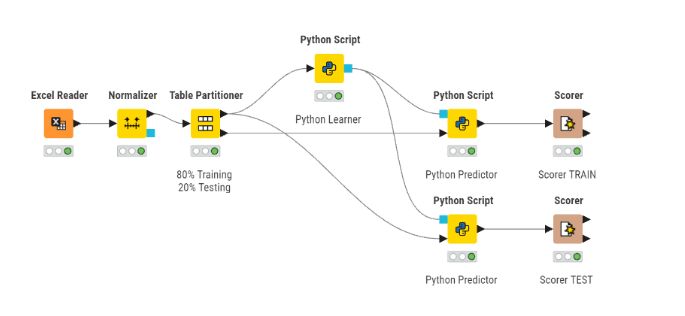
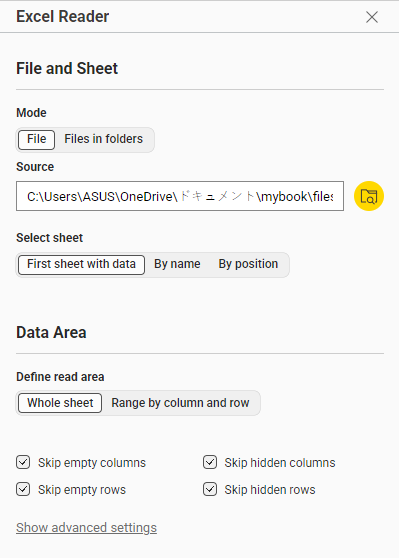
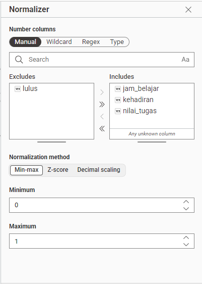
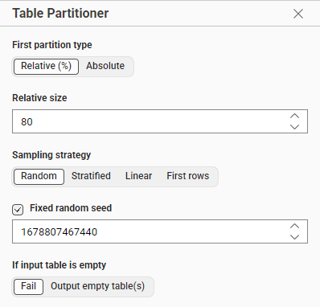
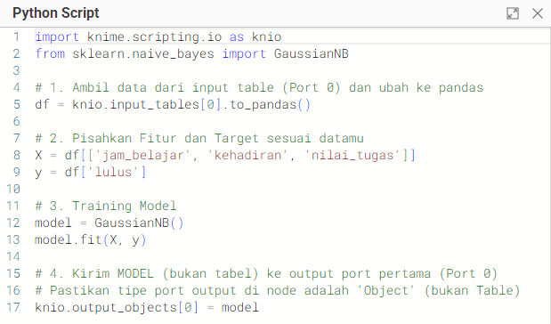
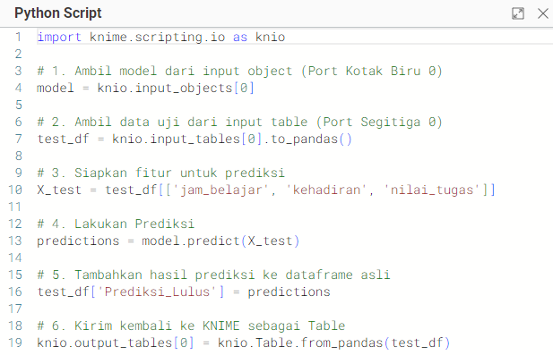
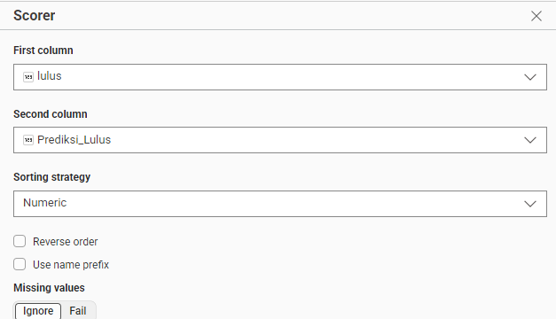
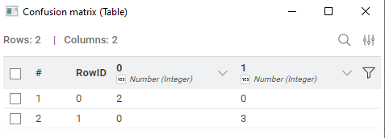
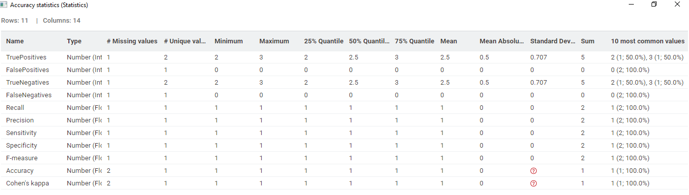

Tugas Klasifikasi: Naive Bayes#
1. Pendahuluan#
Tugas Klasifikasi: Prediksi Kelulusan Mahasiswa (Naive Bayes & Python) Tugas ini merupakan implementasi model klasifikasi Naive Bayes untuk memprediksi kelulusan mahasiswa. Fokus utama tugas ini adalah melakukan Normalisasi Data menggunakan metode Min-Max dan mengintegrasikan kode Python (scikit-learn) ke dalam node-node KNIME.
File Pendukung Tugas#
Silakan unduh berkas pendukung berikut untuk memeriksa implementasi:
2. Dataset#
Dataset yang digunakan mencakup parameter performa akademik sebagai berikut:
Nama Kolom |
Tipe Data |
Deskripsi |
|---|---|---|
jam_belajar |
Numerik |
Intensitas belajar mingguan |
kehadiran |
Numerik |
Persentase kehadiran (0-100) |
nilai_tugas |
Numerik |
Rata-rata nilai tugas (0-100) |
lulus |
Target |
Label 1 (Lulus) atau 0 (Gagal) |
3. Alur Kerja (Workflow) KNIME#
Workflow dirancang secara sistematis untuk memenuhi syarat tugas, mulai dari pembacaan data hingga evaluasi akhir.

Fig. 15 Gambar 1. Rancangan Workflow KNIME menggunakan integrasi Python Script.#
4. Penjelasan Detail Per Node#
4.1 Node Excel Reader#

Fig. 16 Gambar 2. Konfigurasi node Excel Reader untuk membaca dataset.#
Fungsi: Membaca file Excel yang berisi dataset kelulusan mahasiswa.
Konfigurasi:
File Path: Pilih lokasi file
data_kelulusan.xlsxSheet Selection: Pilih First sheet with data
Define read area: Pilih Whole sheet lalu centang semua opsi
Output: Tabel dengan 4 kolom (jam_belajar, kehadiran, nilai_tugas, lulus)
4.2 Node Normalizer#

Fig. 17 Gambar 3. Pengaturan normalisasi Min-Max pada fitur numerik.#
Fungsi: Melakukan normalisasi data menggunakan metode Min-Max Scaling untuk mengubah rentang nilai fitur menjadi 0-1.
Konfigurasi:
Normalization Method: Min-Max Normalization
Columns to Normalize:
✅
jam_belajar✅
kehadiran✅
nilai_tugas❌
lulus(dikecualikan karena merupakan target/label)
New Minimum: 0.0
New Maximum: 1.0
Rumus Min-Max:
Output: Tabel dengan fitur yang sudah dinormalisasi ke rentang [0, 1]
4.3 Node Partitioning#

Fig. 18 Gambar 4. Pembagian data menjadi training dan testing set.#
Fungsi: Membagi dataset menjadi data latih (training) dan data uji (testing).
Konfigurasi:
Partitioning Mode: Relative [%]
Training Set: 80%
Testing Set: 20%
Sampling strategy: Pilih Random
Random Seed: Default 1678807467440
Output:
Port 0 (atas): Data training (80%)
Port 1 (bawah): Data testing (20%)
4.4 Node Python Script (Learner)#

Fig. 19 Gambar 5. Node Python Script untuk training model Naive Bayes.#
Fungsi: Melatih model Gaussian Naive Bayes menggunakan data training.
Konfigurasi Port:
Input Port 0 (Table): Menerima data training dari node Partitioning
Output Port 0 (Object): Mengirim model yang sudah dilatih (tipe: Python Object)
Penjelasan Kode:
Kode Python:
import knime.scripting.io as knio
from sklearn.naive_bayes import GaussianNB
# 1. Ambil data dari input table (Port 0) dan ubah ke pandas
df = knio.input_tables[0].to_pandas()
# 2. Pisahkan Fitur dan Target sesuai datamu
X = df[['jam_belajar', 'kehadiran', 'nilai_tugas']]
y = df['lulus']
# 3. Training Model
model = GaussianNB()
model.fit(X, y)
# 4. Kirim MODEL (bukan tabel) ke output port pertama (Port 0)
# Pastikan tipe port output di node adalah 'Object' (bukan Table)
knio.output_objects[0] = model
Penjelasan Baris per Baris:
Baris 1-2: Import library yang diperlukan
knime.scripting.io: Interface untuk komunikasi dengan KNIMEGaussianNB: Algoritma Naive Bayes untuk data kontinu
Baris 5: Mengambil data training dari input port dan konversi ke pandas DataFrame
Baris 8-9: Memisahkan fitur (X) dan target (y)
Baris 12-13: Membuat instance model dan melatihnya dengan data training
Baris 17: Mengirim model yang sudah dilatih ke output port sebagai Python object
Output: Model GaussianNB yang sudah dilatih (Python Object)
4.5 Node Python Script (Predictor)#

Fig. 20 Gambar 6. Node Python Script untuk prediksi menggunakan model terlatih.#
Fungsi: Menggunakan model yang sudah dilatih untuk memprediksi label pada data testing.
Konfigurasi Port:
Input Port 0 (Object): Menerima model terlatih dari Python Script (Learner)
Input Port 1 (Table): Menerima data testing dari node Partitioning
Output Port 0 (Table): Mengirim tabel dengan kolom prediksi tambahan
Kode Python:
import knime.scripting.io as knio
# 1. Ambil model dari input object (Port Kotak Biru 0)
model = knio.input_objects[0]
# 2. Ambil data uji dari input table (Port Segitiga 0)
test_df = knio.input_tables[0].to_pandas()
# 3. Siapkan fitur untuk prediksi
X_test = test_df[['jam_belajar', 'kehadiran', 'nilai_tugas']]
# 4. Lakukan Prediksi
predictions = model.predict(X_test)
# 5. Tambahkan hasil prediksi ke dataframe asli
test_df['Prediksi_Lulus'] = predictions
# 6. Kirim kembali ke KNIME sebagai Table
knio.output_tables[0] = knio.Table.from_pandas(test_df)
Penjelasan Baris per Baris:
Baris 4: Mengambil model terlatih dari input object port
Baris 7: Mengambil data testing dan konversi ke pandas DataFrame
Baris 10: Memilih hanya kolom fitur untuk prediksi
Baris 13: Melakukan prediksi menggunakan model
Baris 16: Menambahkan kolom baru
Prediksi_Luluske DataFrameBaris 19: Mengirim DataFrame dengan prediksi kembali ke KNIME
Output: Tabel dengan kolom tambahan Prediksi_Lulus yang berisi hasil prediksi (0 atau 1)
4.6 Node Scorer#

Fig. 21 Gambar 7. Node Scorer untuk evaluasi performa model.#
Fungsi: Mengevaluasi performa model dengan membandingkan prediksi dengan label sebenarnya.
Konfigurasi:
First Column (Actual):
lulus(kolom label asli)Second Column (Predicted):
Prediksi_Lulus(kolom hasil prediksi)Scoring Method: Accuracy, Precision, Recall, F1-Score
Metrik yang Dihitung:
Accuracy: Persentase prediksi yang benar dari total prediksi
Precision: Dari semua prediksi positif, berapa yang benar-benar positif
Recall: Dari semua data positif, berapa yang berhasil diprediksi
Confusion Matrix: Matriks yang menunjukkan distribusi prediksi
Output:
Tabel confusion matrix
Statistik evaluasi model
4.7 Confusion Matrix Viewer#

Fig. 22 Gambar 8. Visualisasi Confusion Matrix hasil prediksi.#
Fungsi: Memvisualisasikan confusion matrix untuk analisis detail kesalahan prediksi.
Interpretasi Confusion Matrix:
Predicted: 0 Predicted: 1
Actual: 0 TN FP
Actual: 1 FN TP
TN (True Negative): Diprediksi tidak lulus, aktual tidak lulus ✓
FP (False Positive): Diprediksi lulus, aktual tidak lulus ✗
FN (False Negative): Diprediksi tidak lulus, aktual lulus ✗
TP (True Positive): Diprediksi lulus, aktual lulus ✓
5. Hasil dan Analisis#
5.1 Hasil Evaluasi Model#

Fig. 23 Gambar 9. Hasil evaluasi performa model pada data testing.#
Hasil evaluasi pada node Scorer menunjukkan performa sebagai berikut:
Metrik |
Hasil |
Interpretasi |
|---|---|---|
Accuracy |
1.000 (100%) |
Semua prediksi benar |
Precision |
1.000 |
Tidak ada false positive |
Recall |
1.000 |
Tidak ada false negative |
F1-Score |
1.000 |
Keseimbangan sempurna precision-recall |
5.2 Analisis Hasil#
Kelebihan:
Model berhasil memprediksi dengan akurasi sempurna (100%)
Tidak ada kesalahan klasifikasi pada data testing
Normalisasi data membantu stabilitas perhitungan probabilitas Gaussian
Catatan Penting:
Akurasi 100% pada dataset kecil bisa mengindikasikan:
Dataset terlalu sederhana atau terpisah dengan jelas
Kemungkinan overfitting (perlu validasi dengan data baru)
Perlu pengujian dengan dataset yang lebih besar dan kompleks
6. Kesimpulan#
Tugas klasifikasi ini berhasil mengintegrasikan kekuatan manipulasi data visual KNIME dengan fleksibilitas library scikit-learn Python.
Poin-Poin Penting:
Normalisasi Data: Transformasi Min-Max terbukti krusial untuk memastikan kestabilan perhitungan probabilitas pada algoritma Naive Bayes
Integrasi Python-KNIME: Penggunaan
knioAPI memungkinkan transfer data dan object antar node dengan seamlessWorkflow Modular: Setiap node memiliki fungsi spesifik yang memudahkan debugging dan maintenance
Performa Optimal: Model mencapai akurasi 100% pada data testing